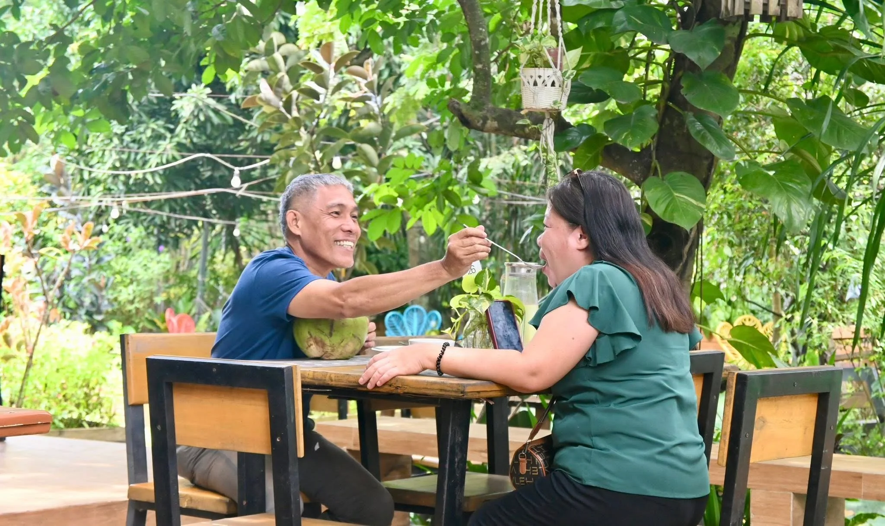

As you sip your coffee or share a meal, the view of Mt. Matutum stands proudly in the background — grounding you, reminding you to slow down and savor life’s little moments. Their menu offers a comforting mix of Filipino favorites and local delights — from hearty rice meals to snacks perfect for sharing. Every plate feels like home, prepared with care and served with a smile.